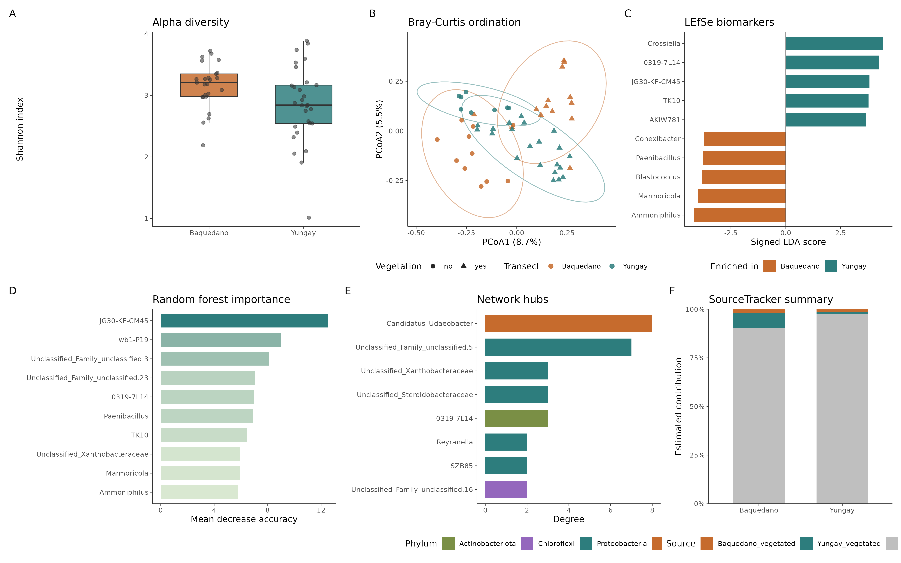

16S 微生物组最佳实践系列（十三）：发表级图表与结果整合——最后一公里
📋 教程信息 - GitHub：petemeng/16S-Tutorial（完整代码与环境文件） - 数据来源：Atacama soils 双端数据集（前 12 篇真实结果整合） - 预计阅读：45 分钟 | 实操：30 分钟 - 难度：⭐⭐⭐⭐（5 星制） - 前置知识：完成本系列第 1-12 篇
本篇目标
前面 12 篇已经把分析跑通了，但真正到写报告、写论文、做汇报的时候，还差最后一步：
把零散结果整成一套统一的发表级图表和统计摘要。
这一篇做四件事：
- 统一图表主题
- 选取前面章节的核心结果拼成总览图
- 输出一张全局统计汇总表
- 输出一张 biomarker 证据整合表
读完这一篇，你会得到的不只是“最后一章”，而是一份可以直接拿去继续加工的项目骨架。
发表级整理到底在做什么
这一步不是重新发明分析，而是把前面已经得到的结果，统一成一个更适合人类阅读和审稿的形式。
对这套 Atacama 数据来说，最值得进入总览 figure 的结果主要有：
- alpha diversity
- Bray-Curtis PCoA
- LEfSe biomarkers
- random forest importance
- network hubs
- SourceTracker summary
这样拼出来的一张图，基本就能把“结构差异、候选 biomarker、生态关联、溯源信息”都交代清楚。
Step 1：统一图表主题并生成总览图
这一章最稳妥的用法不是手抄片段，而是直接调用已经整理好的整合脚本。
Rscript /media/desk16/tly9658/16s-atacama-tutorial/analysis/13_publication_figures.R

图 1：Atacama 16S 系列整合总图。 上排是 alpha diversity、PCoA、LEfSe；下排是随机森林重要性、网络 hub、SourceTracker summary。
这张图的价值在于：它不是简单把 6 张图拼起来，而是把前面分散的章节结论收敛成了一个叙事顺序清晰的总览。
Step 2：输出全局统计汇总表
这一章除了图，还会把前面章节最关键的数字统一收敛到一个 TSV 表里。直接读取即可。
library(readr)
summary_metrics <- read_tsv(
"/media/desk16/tly9658/16s-atacama-tutorial/results/ch13_summary_metrics.tsv",
show_col_types = FALSE
)
print(summary_metrics, n = nrow(summary_metrics))
当前脚本重新运行后的控制台输出如下：
📊 输出：
整合总图已保存：results/figures/ch13_publication_overview.{png,pdf}
统计汇总表已保存：results/ch13_summary_metrics.tsv
biomarker 证据表已保存：results/ch13_biomarker_evidence.tsv
关键统计汇总：
# A tibble: 15 × 2
Metric Value
<chr> <chr>
1 Samples in phyloseq object 54
2 Filtered ASVs 1078
3 Dominant phylum Actinobacteriota (48.55%)
4 LEfSe significant genera 11
5 ANCOM-BC significant genera 1
6 Consensus biomarkers 1
7 PICRUSt2 significant pathways 1
8 NSTI median 0.282
9 Spearman network edges 21
10 Graphical lasso edges 34
11 Best RF LOOCV ROC AUC 0.808
12 SourceTracker mean unknown (Baquedano sinks) 0.905
13 SourceTracker mean unknown (Yungay sinks) 0.977
14 Mantel r 0.45
15 Procrustes correlation 0.795
这一张表几乎就是整套系列的“摘要版结果段落”。
如果你后面要写论文摘要、图注、汇报 PPT，这个文件非常省时间。
Step 3：整合 biomarker 证据链
只看随机森林重要性不够，只看 LEfSe 或 ANCOM-BC 也不够。真正更有说服力的是把多条证据放到同一张表里。这里直接读取脚本已经生成好的整合结果。
library(readr)
library(dplyr)
evidence_df <- read_tsv(
"/media/desk16/tly9658/16s-atacama-tutorial/results/ch13_biomarker_evidence.tsv",
show_col_types = FALSE
)
print(evidence_df %>% slice_head(n = 10))
当前输出里最核心的前 10 个 genus 如下：
📊 输出：
核心 biomarker 证据：
# A tibble: 10 × 11
Genus MeanDecreaseAccuracy LEfSe_group LDA LEfSe_sig ANCOMBC_group logFC ANCOMBC_sig degree betweenness EvidenceCount
1 JG30-KF-CM45 12.49 Yungay 3.81 TRUE Yungay 1.47 TRUE NA NA 2
2 0319-7L14 6.99 Yungay 4.23 TRUE Yungay 1.52 FALSE 3 4 2
3 wb1-P19 9.01 NA NA NA Yungay 1.23 FALSE 1 0 1
4 Paenibacillus 6.90 Baquedano 3.76 TRUE Baquedano -1.12 FALSE NA NA 1
5 TK10 6.45 Yungay 3.77 TRUE Yungay 1.18 FALSE NA NA 1
6 Unclassified_Xanthobacteraceae 5.94 NA NA NA NA NA NA 3 24 1
7 Marmoricola 5.90 Baquedano 4.00 TRUE Baquedano -0.877 FALSE NA NA 1
8 Ammoniphilus 5.75 Baquedano 4.19 TRUE Baquedano -1.02 FALSE NA NA 1
9 Unclassified_Family_unclassified.3 8.13 NA NA NA NA NA NA NA NA 0
10 Unclassified_Family_unclassified.23 7.07 NA NA NA NA NA NA NA NA 0
这张表的意义非常直接：
JG30-KF-CM45 已经不是“某个方法里显著”，而是整个系列里证据最完整的核心 biomarker。
0319-7L14 也很值得注意，因为它同时出现在 LEfSe、随机森林和网络里。
这一章真正解决了什么问题
如果前 12 篇解决的是“怎么分析”，那这一篇解决的是“怎么把分析结果组织成一套可交付物”。
最常见的真实痛点不是不会跑命令，而是：
- 图风格不统一
- 章节之间数字对不上
- 各方法结果散在不同文件里，最后很难收束
这一章把这些问题一次性收拢了。
对现在这套 Atacama 数据来说，整合后的核心信息已经非常清楚：
- 结构层面：两条 transect 存在组成差异
- 差异层面：最稳的共识 biomarker 是
JG30-KF-CM45 - 网络层面：
Candidatus_Udaeobacter等是核心 hub - 分类层面：随机森林 LOOCV AUC 为 0.808
- 溯源层面：bare sinks 主要由
Unknown主导 - 跨组学层面：Mantel 和 Procrustes 都支持微生物组与模拟代谢组存在整体一致性
本篇小结
这一篇没有新增分析方法，但把整个系列真正做成了一个成品。
最终产出三类关键文件：
results/figures/ch13_publication_overview.pngresults/ch13_summary_metrics.tsvresults/ch13_biomarker_evidence.tsv
如果你后面要继续扩展成报告、论文补充材料或 GitHub 项目主页，这三类文件就是最好的起点。
系列完结
到这里，16S 系列的 13 篇内容已经从原理、上游处理、统计分析、功能预测、网络分析、机器学习、溯源分析，一直到最终整合，全部跑完。
后面如果继续往前走，最自然的方向通常有三个：
- 换成真实多组学数据继续做联合分析
- 用 shotgun metagenomics 替代 PICRUSt2
- 围绕核心 biomarker 做实验验证
但无论你走哪条线，这套 13 篇已经足够作为一条完整的 16S 实战主线。
📌 本篇图和表都来自服务器实际运行结果，可在 GitHub 仓库直接复现。
本系列导航
| 篇目 | 主题 | 状态 |
|---|---|---|
| 第 1 篇 | 只测一个基因，怎么就能知道有哪些细菌 | ✅ 已发布 |
| 第 2 篇 | 搭建环境，拿到数据 | ✅ 已发布 |
| 第 3 篇 | DADA2 去噪——从噪声中找到真实序列 | ✅ 已发布 |
| 第 4 篇 | 物种注释——给每个 ASV 一个名字 | ✅ 已发布 |
| 第 5 篇 | 多样性分析——有多“丰富”，彼此有多“不同” | ✅ 已发布 |
| 第 6 篇 | 物种组成可视化——谁占了多少 | ✅ 已发布 |
| 第 7 篇 | 差异物种分析——谁真的变了 | ✅ 已发布 |
| 第 8 篇 | PICRUSt2 功能预测——它们能做什么 | ✅ 已发布 |
| 第 9 篇 | 共现网络分析——谁和谁总在一起 | ✅ 已发布 |
| 第 10 篇 | 随机森林 biomarker 筛选——谁最能代表这个群落 | ✅ 已发布 |
| 第 11 篇 | SourceTracker 溯源分析——它们从哪里来 | ✅ 已发布 |
| 第 12 篇 | 微生物组-代谢组联合分析——跨组学的对话 | ✅ 已发布 |
| 第 13 篇 | 发表级图表与结果整合——最后一公里 | 📍 本篇 |